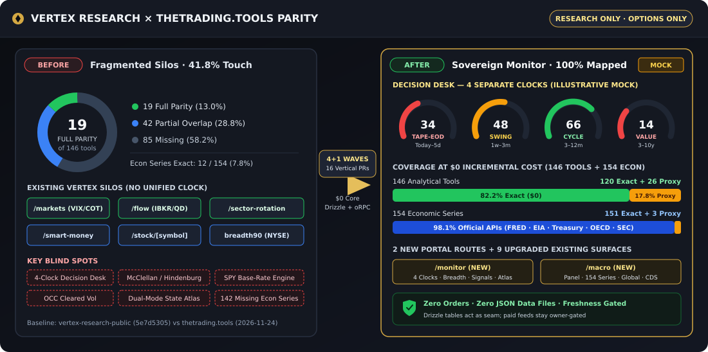
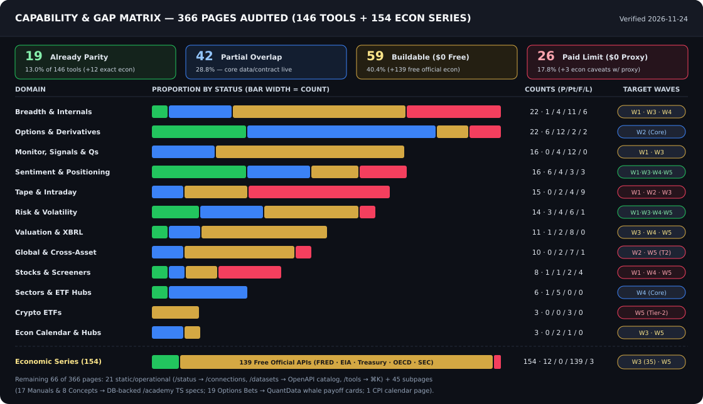
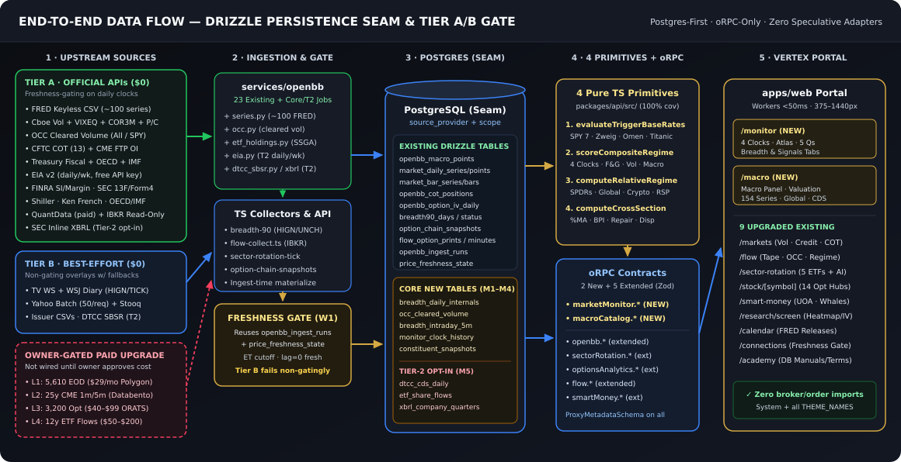
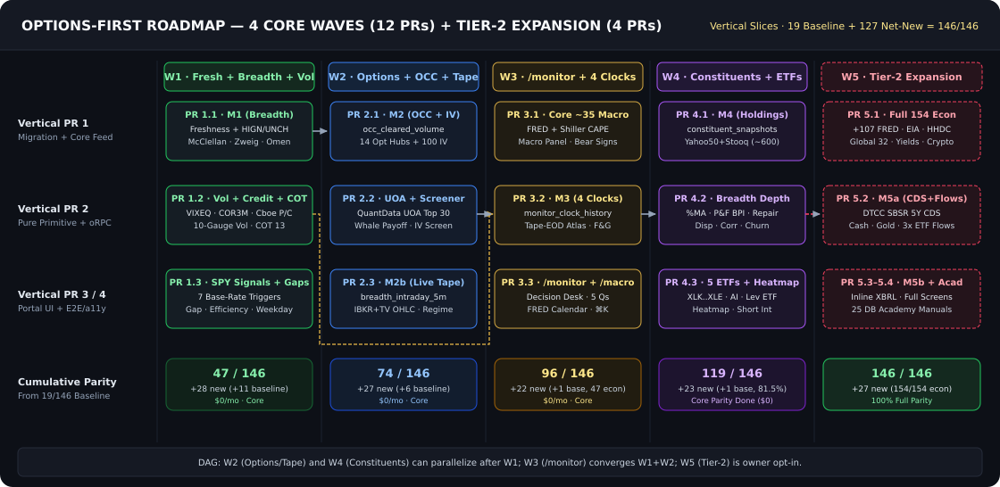

Visual Architecture & Plan Overview
Dark-canvas technical infographics with verified 2026-11-24 counts and
explicit MOCK badges on illustrative UI gauges. On small
phones, swipe any diagram horizontally or tap Open full SVG.




Hard Data Limitations: Owner-Gated Paid Upgrade vs $0 Vertex Proxy
Drizzle Postgres tables stamped with source_provider and
universe_scope
serve as the decoupling seam (zero speculative disabled paid
adapters). All 5 upstream boundaries default to documented $0 proxies.
L1 · 5,610 US Common Stocks EOD
11 tools
(%MA, BPI, Repair Flow, Churn, Stock Map, Scanners).
Paid:
Polygon Stocks Starter ($29/mo) or Tiingo ($30/mo).
$0 Proxy:
S&P 500 + NDX (~600–750) via SSGA/Invesco holdings + chunked
Yahoo/Stooq (forward-only, survivorship-free).
L2 · 25y Futures 1m/5m & TICK/ADD
9 tools
(Candle Size, Bull/Bear Power, Index Sync, TICK/ADD, 20y intraday
Tape/Regime).
Paid:
Databento CME backfill (~$50–$150) + IQFeed ($100–$160/mo).
$0 Proxy:
Dual-Mode Tape-EOD (1995+ Day-1 Atlas) + rolling
Tape-Live
(IBKR + TV 5m OHLC).
L3 · 3,200-Stock Daily Option Chains
2 tools + UOA tail
(Most Active Options, IV Screener).
Paid:
Polygon Options ($29–$79/mo) or ORATS ($99–$199/mo).
$0 Proxy:
Already-paid QuantData + free OCC cleared volume + ~100-ticker
nightly IV snapshots.
L4 · 12y Daily ETF Share Flows
4 tools
(Cash ETFs, Gold ETFs, Long/Short 3x ETFs).
Paid:
Trackinsight / ETF.com ($50–$200/mo).
$0 Proxy:
Verified-issuer daily CSV/XLSX (>85% category AUM) w/
NAV_{t-1}
& AUM split-factor; SPDR/WGC + 10-Q/10-K for 1933 Act gold
trusts, N-PORT for 1940 Act funds.
L5 · Licensed Macro (MOVE / 2 NAR)
3 econ series
(move-index, existing-home-sales,
existing-home-months-supply).
Paid:
ICE Data ($500+/mo) / NAR commercial.
$0 Proxy:
Yahoo ^MOVE w/ automatic TLT 30d IV
fallback; FRED EXHOSLUSM495S append-only Postgres
archive.
Interactive Inventory & Gap Matrix (All 146 Analytical Tools)
Filter by domain, Vertex parity status, buildout wave, or keyword. Full formulas, Drizzle migrations, oRPC contracts, canonical ticker rosters, and 154 economic series live in design.md.
| Route | Tool / Signal | Domain | Status | Wave | Vertex Placement / $0 Proxy |
|---|---|---|---|---|---|
/ |
Market Monitor & 4-Clock Decision Desk | Monitor & Signals | Buildable ($0) | W3 | New /monitor synthesizing existing + Waves 1–4 clocks |
/signals |
SPY Technical Trigger Base-Rate Index | Monitor & Signals | Buildable ($0) | W1 | market_bar_series (SPY) + pure base-rate engine |
/golden-cross |
Golden Cross Base-Rate Study | Monitor & Signals | Buildable ($0) | W1 | market_bar_series (SPY) 50/200 SMA cross |
/monthly-faber |
Monthly Faber Crossover (10M SMA) | Monitor & Signals | Buildable ($0) | W1 | market_bar_series (SPY) monthly close vs 10M SMA |
/ma50-200-reclaim |
50/200 MA Reclaim Study | Monitor & Signals | Buildable ($0) | W1 | market_bar_series (SPY) |
/rsi-oversold-thrust |
RSI(14) Oversold Thrust (<30→>60) | Monitor & Signals | Buildable ($0) | W1 | market_bar_series (SPY) |
/market-correction |
10% Correction Base-Rate Study | Monitor & Signals | Buildable ($0) | W1 | market_bar_series (SPY) ATH drawdown |
/three-percent-down-day |
3% Down Day Base-Rate Study | Monitor & Signals | Buildable ($0) | W1 | market_bar_series (SPY) |
/five-day-losing-streak |
5-Day Losing Streak Base-Rate Study | Monitor & Signals | Buildable ($0) | W1 | market_bar_series (SPY) |
/is-this-a-bull-market |
Q: Is This a Bull or Bear Market? | Monitor & Signals | Buildable ($0) | W3 | Derived from SPY MAs + Cycle/Breadth clocks |
/is-a-recession-coming |
Q: Is a Recession Coming? | Monitor & Signals | Partial | W3 | openbb.macro (T10Y3M, ICSA, NFCI) + Sahm Rule |
/is-market-risk-elevated |
Q: Is Market Risk Elevated? | Monitor & Signals | Partial | W3 | openbb vol indices (VIX/VIX3M) + SPY RV |
/are-investors-too-bullish |
Q: Are Investors Too Bullish? | Monitor & Signals | Buildable ($0) | W3 | Derived from Fear & Greed + Leveraged/Cash ETFs + Margin |
/are-small-caps-confirming |
Q: Are Small Caps Confirming S&P 500? | Monitor & Signals | Partial | W3 | market_bar_series (IWM, SPY) already stored |
/market-state-atlas |
Market State Atlas (Cycle × Tape Analogs) | Monitor & Signals | Buildable ($0) | W3 | Dual-Mode Tape-EOD (survivorship-free 1995+ daily proxy) × Cycle causal analog engine on /monitor |
/interactive-charts |
Interactive Charts Hub | Monitor & Signals | Partial | W3 | Portal /charts + /monitor interactive views |
/ninety-percent-days |
90% Up / Down Days | Breadth & Internals | Parity | W1 | breadth90.* + scripts/breadth-90 (TV + WSJ) live on /markets |
/advance-decline-line |
Advance-Decline Line | Breadth & Internals | Partial | W1 | breadth-90 already ingests USI:ADV & USI:DECL daily |
/mcclellan-oscillator |
McClellan Oscillator & Summation | Breadth & Internals | Partial | W1 | Pure 19d/39d EMA over stored USI:ADV − USI:DECL |
/zweig-breadth-thrust |
Zweig Breadth Thrust | Breadth & Internals | Partial | W1 | Pure 10d EMA of ADV/(ADV+DECL) over stored breadth-90 |
/new-highs-new-lows |
New Highs & New Lows | Breadth & Internals | Buildable ($0) | W1 | Extend TradingView/WSJ collector with USI:HIGN / USI:LOWN |
/stocks-at-52-week-lows |
Stocks at 52-Week Lows Washout | Breadth & Internals | Buildable ($0) | W1 | WSJ/TV NYSE 52w lows + S&P500/NDX proxy count |
/hindenburg-omen |
Hindenburg Omen (clustered) | Breadth & Internals | Buildable ($0) | W1 | NYSE HIGN/LOWN + McClellan + NYSE Comp/SPY 50d slope |
/titanic-syndrome |
Titanic Syndrome | Breadth & Internals | Buildable ($0) | W1 | NYSE HIGN/LOWN + SPY 52w high proximity |
/equal-weight-vs-cap-weight |
Equal Weight vs Cap Weight (RSP/SPY) | Breadth & Internals | Buildable ($0) | W1 | Add RSP to daily-prices + existing SPY & Fama-French SMB |
/coppock-curve |
Coppock Curve | Breadth & Internals | Buildable ($0) | W1 | Pure WMA10(ROC14 + ROC11) on stored monthly SPY |
/buy-the-dip |
Buy the Dip Tracker | Breadth & Internals | Buildable ($0) | W1 | Stored SPY/QQQ + VIX/VXN/VIX3M + Fama-French |
/market-breadth |
Market Breadth Overview Hub | Breadth & Internals | Partial | W4 | Synthesizes Wave 1 exchange breadth + Wave 2 constituent breadth |
/swing-tracker |
Swing Tracker (1w–3m Clock) | Breadth & Internals | Buildable ($0) | W3 | 5-dimension pure scorer over breadth + VIX/VIX3M/VXN + HYG/LQD |
/cycle-tracker |
Cycle Tracker (3–12m Clock) | Breadth & Internals | Buildable ($0) | W3 | 6-dimension pure scorer over SPY/RSP, breadth, HYG/LQD, OECD CLI, T10Y2Y/Sahm/NFCI |
/stocks-above-moving-average |
Stocks Above Moving Averages (20/50/200d) | Breadth & Internals | Paid Limit ($0 Proxy) | W4 | Paid: ~4,750 US common OHLCV | $0 Proxy: S&P500+NDX (~600) + TV MMFI/MMTH |
/bullish-percent-index |
Bullish Percent Index (P&F) | Breadth & Internals | Paid Limit ($0 Proxy) | W4 | Paid: ~4,750 US common OHLCV | $0 Proxy: P&F engine over S&P500+NDX (~600) |
/bear-market-breadth |
Bear Market Breadth (% in 10%/20% DD) | Breadth & Internals | Paid Limit ($0 Proxy) | W4 | Paid: full small-cap cohort | $0 Proxy: SPY/DIA/QQQ holdings via free SSGA/Invesco CSV |
/hidden-bear-index |
Hidden Bear Index (RSP vs SPY + dispersion) | Breadth & Internals | Paid Limit ($0 Proxy) | W4 | RSP vs SPY is $0; full ~4,750 dispersion uses S&P500 proxy unless paid EOD |
/market-repair-flow |
Market Repair Flow (cohort MA transitions) | Breadth & Internals | Paid Limit ($0 Proxy) | W4 | Paid: ~4,750 common stocks | $0 Proxy: S&P500+NDX transition matrix |
/contribution-concentration |
Contribution Concentration (S&P/NDX) | Breadth & Internals | Buildable ($0) | W4 | SSGA SPY + Invesco QQQ free daily holdings weights + Yahoo/IBKR closes |
/stocks-outperforming-the-index |
Stocks Beating the Index | Breadth & Internals | Paid Limit ($0 Proxy) | W4 | Paid: ~4,750 common stocks | $0 Proxy: S&P500 + NDX constituent cohort |
/negative-beta |
Negative Beta Tracker | Breadth & Internals | Buildable ($0) | W4 | S&P 500 constituents vs SPY + Ken French 49 industry portfolios (free) |
/vix-fear-index |
VIX Fear Index | Risk & Volatility | Parity | W1 | cboe-vol-indices (VIX) + /markets volatility workspace |
/vix-term-structure |
VIX Term Structure (VIX/VIX3M + VX Curve) | Risk & Volatility | Parity | W1 | cboe-vol-indices (VIX1D..VIX1Y) + cboe-vx-curve live |
/skew-index |
CBOE SKEW Index | Risk & Volatility | Parity | W1 | cboe-vol-indices already stores SKEW daily |
/tech-volatility-spread |
Tech Volatility Spread (VXN − VIX) | Risk & Volatility | Partial | W1 | VXN, VIX, QQQ, SPY already stored; add spread & RV panel |
/volatility-outlook |
Volatility Outlook (10-Gauge Composite) | Risk & Volatility | Partial | W1 | 8/10 gauges already stored (VIX, VIX3M, VVIX, SKEW, VXN, SPY RV, HY_OAS); add COR3M + ^MOVE |
/volatility-premium |
Single-Stock Vol Premium (VIXEQ−VIX, COR3M) | Risk & Volatility | Buildable ($0) | W1 | Add VIXEQ + COR3M to cboe-vol-indices (free Cboe public CSV) |
/credit-spreads |
Credit Spreads (HYG/LQD + 9 ETFs + CFTC Swaps) | Risk & Volatility | Partial | W1 | HY_OAS, IG_OAS, CBDI stored; add 9 credit/Treasury ETFs + CFTC Weekly Swaps |
/credit-stress |
Credit Stress (Single-Name 5Y CDS via DTCC SBSR) | Risk & Volatility | Buildable ($0) | W5 (T2) | Free public DTCC SEC Reg SBSR dissemination feed -> new openbb job |
/macro-panel |
Cross-Asset Macro Panel (15 Instruments / 4 Drivers) | Risk & Volatility | Partial | W3 | 7/15 already in daily-prices (SPY, GLD, SLV, USO, TNX, DTWEXBGS); add 8 liquid ETFs/futures |
/bear-market-warning-signs |
Bear Market Warning Signs (11 Signs) | Risk & Volatility | Buildable ($0) | W3 | Yahoo ^GSPC/^NDX/^RUT + Sector SPDRs + Ken French + FRED + Shiller (all free) |
/delinquency-tracker |
Delinquency Tracker (NY Fed HHDC) | Risk & Volatility | Buildable ($0) | W5 (T2) | Free NY Fed Quarterly HHDC + FRED bank delinquency series |
/realized-correlation |
Stock Correlation (Realized + Implied) | Risk & Volatility | Buildable ($0) | W4 | Top-50/100 S&P500 constituent returns + Cboe COR3M (free) |
/return-dispersion |
Return Dispersion (Top 100 Stocks) | Risk & Volatility | Buildable ($0) | W4 | Top-100 S&P500 constituents (SSGA SPY weights + daily closes) |
/momentum-churn |
Momentum Churn | Risk & Volatility | Paid Limit ($0 Proxy) | W4 | Paid: ~4,750 common stocks | $0 Proxy: S&P500+NDX (~600) cross-sectional churn |
/gap-analysis |
Gap Analysis (SPY & QQQ Overnight Gaps) | Tape & Intraday | Buildable ($0) | W1 | Pure calculation over stored SPY & QQQ daily OHLC bars |
/range-efficiency |
Range Efficiency (QQQ/SPY Daily OHLC) | Tape & Intraday | Buildable ($0) | W1 | Pure calculation |Close−Open|/(High−Low) on stored QQQ/SPY bars |
/seasonality |
Monthly Seasonality (SPY & QQQ) | Tape & Intraday | Buildable ($0) | W1 | Pure calculation over stored SPY & QQQ daily closes |
/weekday-analysis |
Weekday Analysis (Overnight vs Intraday) | Tape & Intraday | Buildable ($0) | W1 | Pure calculation over stored SPY daily open/close bars |
/intraday-momentum |
Intraday Momentum (QQQ/SPY) | Tape & Intraday | Partial | W2 | IBKR read-only history + flow_minutes/flow_option_prints for ES/NQ/QQQ |
/candle-size |
Futures Candle Size (ES/NQ 1m) | Tape & Intraday | Paid Limit ($0 Proxy) | W2 | Live/rolling via existing IBKR ES/NQ stream; 1997–2025 archive needs Databento |
/bull-bear-power |
Bull vs Bear Power (ES/NQ 5m) | Tape & Intraday | Paid Limit ($0 Proxy) | W2 | Live/rolling via existing IBKR ES/NQ stream; 2009–2025 archive needs Databento |
/session-momentum |
Session Momentum (ES/NQ 5m) | Tape & Intraday | Paid Limit ($0 Proxy) | W2 | Live/rolling via existing IBKR ES/NQ stream; 2009–2025 archive needs Databento |
/index-sync |
Index Sync (ES/NQ/YM/RTY 5m) | Tape & Intraday | Paid Limit ($0 Proxy) | W2 | Live/rolling via IBKR 5m bars (add YM/RTY); deep archive needs Databento |
/nyse-tick |
NYSE TICK ($TICK 5m) | Tape & Intraday | Paid Limit ($0 Proxy) | W2 | Live/rolling via TV USI:TICK 5m (free); 1997–2025 archive needs IQFeed/TS |
/nasdaq-tick |
Nasdaq TICK ($TIKQ 5m) | Tape & Intraday | Paid Limit ($0 Proxy) | W2 | Live/rolling via TV USI:TICKQ 5m (free); 2001–2025 archive needs IQFeed/TS |
/nyse-advance-decline |
NYSE A/D Issues ($ADD 5m) | Tape & Intraday | Partial | W2 | breadth-90 already pulls 5m USI:ADV/DECL; deep 2007+ archive needs paid feed |
/nasdaq-advance-decline |
Nasdaq A/D Issues ($ADQD 5m) | Tape & Intraday | Paid Limit ($0 Proxy) | W2 | Live/rolling via TV USI:ADVQ/DECLQ 5m (free); 2007+ archive needs paid feed |
/market-regime |
Market Regime (2-Axis Expansion/Whipsaw/Grind/Chop) | Tape & Intraday | Paid Limit ($0 Proxy) | W2 | Pure classifier over 6 intraday tools (rolling free; 2004+ base rates need paid archive) |
/tape-tracker |
Tape Tracker (Today–5d Clock) | Tape & Intraday | Paid Limit ($0 Proxy) | W3 | Pure 6-dimension scorer (live/rolling free via IBKR+TV; 2010+ replay needs paid archive) |
/chart |
Interactive Daily OHLCV Stock Chart | Stocks & Screeners | Parity | W1 | /charts and /stock/[symbol] StockChartPanel live |
/short-interest |
Short Interest & Squeeze Watch | Stocks & Screeners | Partial | W4 | finra-short-interest & finra-short-volume live; add days-to-cover + float ranking |
/us-vs-international-stocks |
US vs International Stocks (SPY/EFA) | Stocks & Screeners | Buildable ($0) | W5 (T2) | Add EFA to daily-prices + existing SPY + Ken French International (free) |
/market-heatmap |
Market Heatmap (Top 100 & Thematic Treemaps) | Stocks & Screeners | Buildable ($0) | W4 | Top-100/S&P500 via SSGA weights + SEC EDGAR share counts + daily closes |
/stock-map |
Stock Map (4,609 US Stocks by Sector/Industry/Size) | Stocks & Screeners | Paid Limit ($0 Proxy) | W5 (T2) | Paid: ~5,500 OHLCV ($29/mo Polygon) | $0 Proxy: S&P500+NDX+Russell1000 (~1,000) + SEC SIC |
/unusual-volume |
Unusual Volume Scanner (50%+ vs 30d Avg) | Stocks & Screeners | Paid Limit ($0 Proxy) | W5 (T2) | Paid: ~5,500 OHLCV | $0 Proxy: S&P500+NDX+Watchlist+research-screen (~700) |
/momentum-scanner |
Momentum Scanner (Composite Score 0–100) | Stocks & Screeners | Paid Limit ($0 Proxy) | W5 (T2) | Paid: ~5,500 OHLCV | $0 Proxy: S&P500+NDX+Leveraged ETFs (~700) |
/squeeze-radar |
Squeeze Radar (FINRA SI + Rally Detection) | Stocks & Screeners | Paid Limit ($0 Proxy) | W5 (T2) | FINRA SI is free & wired; full-universe daily volume/price trigger needs broad OHLCV or S&P500/NDX proxy |
/household-equity-allocation |
Household Equity Allocation (Fed Z.1) | Valuation & Fundamentals | Buildable ($0) | W3 | FRED keyless CSV BOGZ1FL153064486Q |
/spy-m2-ratio |
SPY / M2 Money Supply Ratio | Valuation & Fundamentals | Buildable ($0) | W3 | Stored SPY + FRED keyless CSV M2SL |
/spy-options |
SPY Options Dashboard (IV/RV, Skew, Term, Walls) | Options & Derivatives | Parity | W2 | /stock/SPY + optionsAnalytics.* + openbb.ivHistory + QuantData OI/term |
/qqq-options |
QQQ Options Dashboard | Options & Derivatives | Parity | W2 | /stock/QQQ + optionsAnalytics.* + openbb.ivHistory |
/iwm-options |
IWM Options Dashboard | Options & Derivatives | Parity | W2 | /stock/IWM + optionsAnalytics.* + openbb.ivHistory |
/gld-options |
GLD Options Dashboard | Options & Derivatives | Parity | W2 | /stock/GLD + optionsAnalytics.* + openbb.ivHistory |
/smh-options |
SMH Options Dashboard | Options & Derivatives | Partial | W2 | /stock/SMH works on demand; add SMH to nightly cboe-option-iv + snapshots |
/aapl-options |
AAPL Options Dashboard | Options & Derivatives | Partial | W2 | /stock/AAPL works on demand; add to nightly IV snapshot list |
/googl-options |
GOOGL Options Dashboard | Options & Derivatives | Partial | W2 | /stock/GOOGL works on demand; add to nightly IV snapshot list |
/msft-options |
MSFT Options Dashboard | Options & Derivatives | Partial | W2 | /stock/MSFT works on demand; add to nightly IV snapshot list |
/nvda-options |
NVDA Options Dashboard | Options & Derivatives | Partial | W2 | /stock/NVDA works on demand; add to nightly IV snapshot list |
/tqqq-options |
TQQQ Options Dashboard | Options & Derivatives | Partial | W2 | In leveraged-etf universe; add to nightly IV snapshot list |
/sqqq-options |
SQQQ Options Dashboard | Options & Derivatives | Partial | W2 | In leveraged-etf universe; add to nightly IV snapshot list |
/soxl-options |
SOXL Options Dashboard | Options & Derivatives | Partial | W2 | In leveraged-etf universe; add to nightly IV snapshot list |
/soxs-options |
SOXS Options Dashboard | Options & Derivatives | Partial | W2 | In leveraged-etf universe; add to nightly IV snapshot list |
/fas-options |
FAS Options Dashboard | Options & Derivatives | Partial | W2 | In leveraged-etf universe; add to nightly IV snapshot list |
/spy-options-oi |
SPY Options Open Interest (All/30d/7d/0DTE) | Options & Derivatives | Parity | W2 | option_chain_snapshots + QuantData OI-by-strike + Strike Profiles live |
/spy-options-landscape |
SPY Options Landscape (Strike × Expiry Heatmap) | Options & Derivatives | Parity | W2 | flow-strike-heatmap-panel.tsx + option_chain_snapshots + optionsAnalytics.* |
/spy-options-volume |
SPY Options Volume (OCC Cleared) | Options & Derivatives | Buildable ($0) | W2 | Free OCC daily cleared volume query (theocc.com) + QuantData premium |
/total-options-putcall |
Total US Options Put/Call (OCC by Account Type) | Options & Derivatives | Buildable ($0) | W2 | Free OCC daily volume query (Customer / Firm / Market Maker) |
/unusual-options-activity |
Unusual Options Activity (Daily Top 30 Bull/Bear) | Options & Derivatives | Partial | W2 | Already paid QuantData consolidated flow powers /smart-money; full 3,200 EOD chain needs ORATS/Polygon ($29–$99/mo) |
/most-active-options |
Most Active Options (Contracts & Premium) | Options & Derivatives | Paid Limit ($0 Proxy) | W2 | Paid: ~2,900 EOD chains ($29–$99/mo) | $0 Proxy: QuantData gainers/flow + OCC top symbols |
/iv-screener |
IV Screener (IV, IVR, IV vs RV across universe) | Options & Derivatives | Paid Limit ($0 Proxy) | W2 | Paid: broad EOD chains ($29–$99/mo) | $0 Proxy: expand openbb_option_iv_daily to ~100 core ETFs & mega-caps |
/options-bets |
Curated Options Bets Payoff Analyzer | Options & Derivatives | Partial | W2 | Auto-detected whale prints from QuantData flow + payoff curve calculator (no manual entry needed) |
/commitment-of-traders |
Commitment of Traders Board | Sentiment & Positioning | Parity | W1 | cftc-cot job + openbb.cot live for 10 futures markets (expand to 13) |
/es-cot |
S&P 500 Futures (ES) COT Positioning | Sentiment & Positioning | Parity | W1 | cftc-cot ES (13874A) + ES=F daily prices live |
/nq-cot |
Nasdaq-100 Futures (NQ) COT Positioning | Sentiment & Positioning | Parity | W1 | cftc-cot NQ (209742) + NQ=F daily prices live |
/cl-cot |
WTI Crude Oil (CL) COT Positioning | Sentiment & Positioning | Parity | W1 | cftc-cot CL (067651) + CL=F daily prices live |
/gc-cot |
Gold Futures (GC) COT Positioning | Sentiment & Positioning | Parity | W1 | cftc-cot GC (088691) + GC=F daily prices live |
/cross-asset-positioning-map |
Cross-Asset Positioning Map (COT Heatmap) | Sentiment & Positioning | Partial | W1 | Add ZB/EUR/JPY to cftc-cot (10→13 markets) + percentile heatmap UI |
/futures-open-interest |
Futures Open Interest (ES & NQ) | Sentiment & Positioning | Parity | W1 | cme-futures-oi (CME_ES_OI, CME_NQ_OI) + futures-oi-panel.tsx live |
/put-call-ratio |
CBOE Put/Call Ratio (Total/Equity/Index) | Sentiment & Positioning | Partial | W1 | flow already tracks SPY/ES P/C; add Cboe free daily market stats CSV |
/consumer-sentiment |
Consumer Sentiment (UMich) | Sentiment & Positioning | Buildable ($0) | W3 | FRED keyless CSV UMCSENT |
/momentum-vs-low-volatility |
Momentum vs Low Volatility (MTUM/USMV) | Sentiment & Positioning | Buildable ($0) | W4 | Add MTUM & USMV to daily-prices + existing Fama-French MOM |
/leveraged-etf-sentiment |
Leveraged ETF Speculation Index (9 Pairs) | Sentiment & Positioning | Partial | W4 | leveraged_etf_universe table exists; add daily dollar-volume bull/bear ratio |
/fear-greed-index |
Transparent 8-Component Fear & Greed Index | Sentiment & Positioning | Buildable ($0) | W3 | Pure 8-component scorer (momentum, NH/NL, UVOL, P/C, VIX, HY/IG, safe-haven, cash flows) |
/etf-short-interest |
ETF Short Interest (12 Major Funds) | Sentiment & Positioning | Partial | W5 (T2) | finra-short-interest live; add issuer daily share-count join |
/cash-etf-flows |
Cash ETF Flows (23 T-Bill/Ultra-Short ETFs) | Sentiment & Positioning | Paid Limit ($0 Proxy) | W5 (T2) | Paid: 12y daily shares-out history | $0 Proxy: free issuer daily CSVs + SEC N-PORT backfill |
/long-leveraged-etfs |
Long 3x Leveraged ETFs (SI + OCC + Flows) | Sentiment & Positioning | Paid Limit ($0 Proxy) | W5 (T2) | FINRA SI + OCC free; historical daily share counts need issuer/N-PORT proxy or ETF flow vendor |
/short-leveraged-etfs |
Short 3x Leveraged ETFs (SI + OCC + Flows) | Sentiment & Positioning | Paid Limit ($0 Proxy) | W5 (T2) | FINRA SI + OCC free; historical daily share counts need issuer/N-PORT proxy or ETF flow vendor |
/sector-performance |
Sector Performance (11 GICS SPDRs vs SPY) | Sectors & ETFs | Parity | W4 | sectorRotation.* + /sector-rotation + /rotation-matrix live |
/xlk |
XLK Technology Dashboard | Sectors & ETFs | Partial | W4 | Add free SSGA holdings CSV + constituent breadth/concentration/options/flows panel |
/smh |
SMH Semiconductors Dashboard | Sectors & ETFs | Partial | W4 | Add free VanEck holdings CSV + constituent breadth/concentration/options/flows panel |
/xlf |
XLF Financials Dashboard | Sectors & ETFs | Partial | W4 | Add free SSGA holdings CSV + constituent breadth/concentration/options/flows panel |
/kre |
KRE Regional Banks Dashboard | Sectors & ETFs | Partial | W4 | Add free SSGA holdings CSV + constituent breadth/concentration/options/flows panel |
/xle |
XLE Energy Dashboard | Sectors & ETFs | Partial | W4 | Add free SSGA holdings CSV + constituent breadth/concentration/options/flows panel |
/stocks-vs-bonds |
Stocks vs Bonds (Earnings Yield / 10Y) | Valuation & Fundamentals | Parity | W3 | shiller.py + EY_TNX_RATIO + TNX already stored in daily-prices |
/stock-market-trend |
S&P 500 vs Long-Term Trend (1881+) | Valuation & Fundamentals | Partial | W3 | shiller.py already parses Shiller ie_data.xls; expose log-trend regression |
/stock-market-valuation |
Stock Market Valuation Composite | Valuation & Fundamentals | Partial | W3 | Shiller + Ken French B/M + FRED Z.1/BEA (all free/wired) |
/bubble-tracker |
Bubble Tracker (Valuation Clock 3–10y) | Valuation & Fundamentals | Buildable ($0) | W3 | Release-aware 3-pillar scorer over Shiller, FRED Z.1/BEA, FINRA margin, XLK/SPY |
/nasdaq-equal-weight |
Nasdaq Equal Weight (QQQ vs QQEW vs XLK) | Valuation & Fundamentals | Buildable ($0) | W4 | Add QQEW to daily-prices + existing QQQ & XLK |
/ai-trade |
AI Trade Index (9 Thematic Build-Out Groups) | Valuation & Fundamentals | Buildable ($0) | W4 | Baskets brick (baskets.*) + daily closes for curated 9 AI groups vs RSP |
/corporate-efficiency |
Corporate Efficiency (SG&A & Margins via XBRL) | Valuation & Fundamentals | Buildable ($0) | W5 (T2) | Free SEC EDGAR XBRL companyfacts API (using existing sec_guard.py) |
/market-pe-ratio |
Market P/E Ratio (Bottom-Up XBRL) | Valuation & Fundamentals | Buildable ($0) | W5 (T2) | Free SEC EDGAR XBRL net income & shares + daily closes + UST10Y |
/real-estate-tracker |
Real Estate Tracker (Dollar Volume & Supply) | Valuation & Fundamentals | Buildable ($0) | W5 (T2) | FRED Census housing series + free Zillow CSV + append-only NAR FRED archive |
/gold-price |
Gold Price (Nominal, Real & Drawdowns) | Global & Cross-Asset | Partial | W5 (T2) | GLD & GC=F stored; add CPI deflator + World Bank monthly history |
/gold-bottom-or-bounce |
Gold: Bottom or Bounce? (GLD Options Study) | Global & Cross-Asset | Partial | W2 | GLD closes + openbb_option_iv_daily + OCC GLD cleared volume |
/gold-etf-flows |
Gold ETF Flows (9 Physical Gold ETFs) | Global & Cross-Asset | Paid Limit ($0 Proxy) | W5 (T2) | Paid: 14y daily share history | $0 Proxy: free issuer CSVs (GLD/IAU/SGOL/BAR/GLDM/AAAU) + N-PORT |
/country-performance |
Country Performance (32 MSCI ETFs vs ACWI) | Global & Cross-Asset | Buildable ($0) | W5 (T2) | Add 32 MSCI country ETFs + ACWI to daily-prices (free Yahoo/IBKR) |
/country-relative-strength |
Country Relative Strength (Country ÷ ACWI) | Global & Cross-Asset | Buildable ($0) | W5 (T2) | Reuse sectorRotation.* RRG math over 32 MSCI ETFs vs ACWI |
/country-health |
Global Market Health (32-Country MA Regimes) | Global & Cross-Asset | Buildable ($0) | W5 (T2) | Pure 50d/200d regime classifier over 32 MSCI country ETFs |
/global-bond-yields |
Global 10-Year Bond Yields (30 Countries) | Global & Cross-Asset | Buildable ($0) | W5 (T2) | Free official APIs: FRED DGS10, Bundesbank, MOF Japan, BoE, BoC, RBA, ECB, OECD |
/central-bank-gold |
Central Bank Gold Buying (IMF Official) | Global & Cross-Asset | Buildable ($0) | W5 (T2) | Free IMF International Financial Statistics (IFS) official gold reserves API |
/savings-rate-by-country |
Savings Rate by Country (OECD) | Global & Cross-Asset | Buildable ($0) | W5 (T2) | Free OECD SDMX National Accounts API (oecd fetcher already in services/openbb) |
/crack-spread |
3-2-1 Crack Spread (Refining Margin) | Global & Cross-Asset | Buildable ($0) | W5 (T2) | Free EIA Petroleum API v2 (WTI, RBOB, ULSD spot prices) |
/crypto-performance |
Crypto Performance (BTC/ETH/SOL/XRP/LTC ETFs) | Crypto | Buildable ($0) | W5 (T2) | Add IBIT, ETHA, BITW + spot crypto ETFs/tickers to daily-prices (free) |
/crypto-relative-strength |
Crypto Relative Strength (Coin ÷ BITW) | Crypto | Buildable ($0) | W5 (T2) | Pure ratio engine over spot crypto ETFs vs BITW |
/crypto-health |
Crypto Trend Health (50d/200d Regimes) | Crypto | Buildable ($0) | W5 (T2) | Pure 50d/200d regime classifier over crypto ETF series |
/economic-calendar |
Economic Release Calendar | Economic Data & Macro | Partial | W3 | fed-events + treasury-tga already populate openbb_event_calendar; add FRED release schedules |
/economy |
Economic Indicator Directory (154 Series) | Economic Data & Macro | Partial | W5 (T2) | openbb_macro_series holds 35 series (12 exact directory overlap); expand to 154 via FRED/EIA/Treasury/OECD/XBRL |
/mortgage-rate |
30-Year Fixed Mortgage Rate (Freddie Mac) | Economic Data & Macro | Buildable ($0) | W3 | FRED keyless CSV MORTGAGE30US |
Options-First Phased Buildout (4 Core Waves + Tier-2 Wave 5 · 16 Vertical PRs)
Wave 1 · PRs 1.1–1.3 ($0 Core)
+28 net-new (+11 baseline → 47/146).
M1 (breadth_daily_internals) + existing freshness
gate. Exchange breadth (McClellan, Zweig, Hindenburg, Titanic),
10-gauge Vol Outlook, 13-market COT, 7 SPY base rates, Daily Tape
stats.
Wave 2 · PRs 2.1–2.3 ($0 Core)
+27 net-new (+6 baseline → 74/146).
M2 (occ_cleared_volume,
breadth_intraday_5m). OCC cleared vol, 14 options
hubs, QuantData UOA Top-30 & Whale Payoff, IV Screener, live
IBKR/TV 5m OHLC tape & Market Regime.
Wave 3 · PRs 3.1–3.3 ($0 Core)
+22 net-new (+1 base → 96/146; 47/154 econ).
M3 (monitor_clock_history). Full
/monitor
4-Clock Decision Desk, Day-1
Tape-EOD
State Atlas, Fear & Greed, 5 Qs, Macro Panel, Bear Warning
Signs, Shiller CAPE, FRED Calendar.
Wave 4 · PRs 4.1–4.3 ($0 Core)
+23 net-new (+1 base → 119/146, 81.5%).
M4 (constituent_snapshots). Constituent breadth (%MA,
Log-2% P&F BPI, Repair Flow, HBI, Dispersion, Correlation,
Churn), 5 ETF Hubs, AI Trade, Lev ETF Sentiment, Top-100 Heatmap
& Short Interest.
Wave 5 · PRs 5.1–5.4 (Tier-2 Opt-In)
+27 net-new (+107 econ → 146/146 & 154/154).
M5 (dtcc_cds_daily, etf_share_flows,
xbrl_company_quarters). Full 154-series
/macro
catalog, Global 32 & Crypto, DTCC 5Y CDS, verified-issuer ETF
flows, Inline XBRL, broad screeners, and 25 DB-backed Academy
manuals.